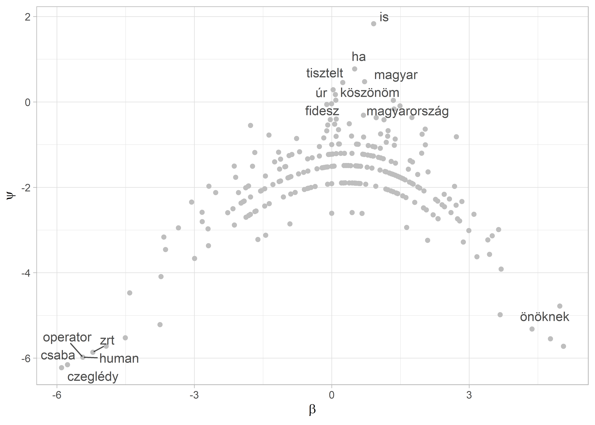
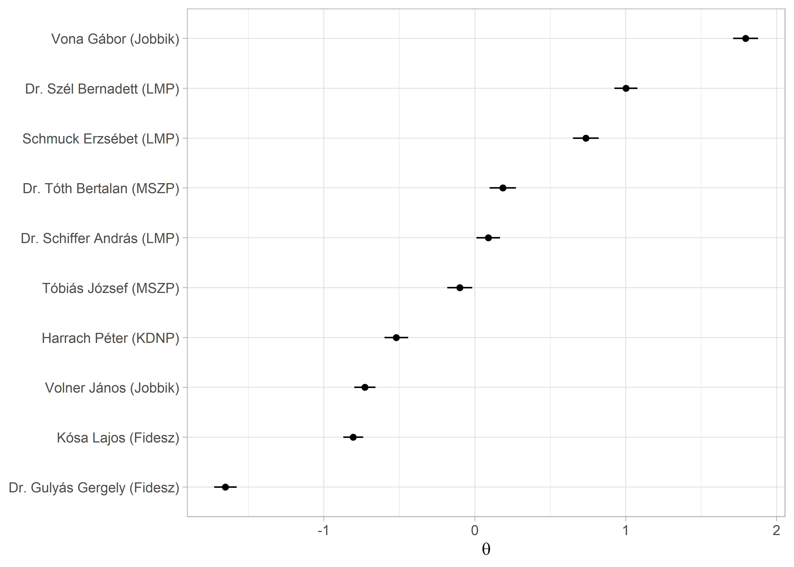

1 Szövegskálázás
1.1 Fogalmi alapok
A politikatudomány egyik izgalmas kérdése a szereplők ideológiai skálákon való elhelyezése. Ezt jellemzően pártprogramok vagy különböző ügyekkel kapcsolatos álláspontpontok alapján szokták meghatározni, de a politikusok beszédei is alkalmasak arra, hogy meghatározzuk a beszélő ideológiai hovatartozását. A szövegbányászat területén jellemzően a wordfish és a wordscores módszert alkalmazzák erre a feladatra. Míg előbbi a felügyelet nélküli módszerek sorába tartozik, utóbbi felügyelt módszerek közé. A wordscores a szótári módszerekhez hasonlóan a szövegeket a bennük található szavak alapján helyezi el a politikai térben oly módon, hogy az ún. referenciadokumentumok szövegét használja tanító halmazként. A wordscores kiindulópontja, hogy pozíció pontszámokat kell rendelni referencia szövegekhez. A modell számításba veszi a szövegek szavainak súlyozott gyakoriságát és a pozíciópontszám, valamint a szógyakoriság alapján becsüli meg a korpuszban lévő többi dokumentum pozícióját [@laver2003extracting].
A felügyelet nélküli wordfish módszer a skálázás során nem a referencia dokumentumokra támaszkodik, hanem olyan kifejezéseket keres a szövegben, amelyek megkülönböztetik egymástól a politikai spektrum különböző pontjain elhelyezkedő beszélőket. Az IRT-n (item response theory) alapuló módszer azt feltételezi, hogy a politikusok egy kevés dimenziós politikai térben mozognak, amely tér leírható az i politikus \(\theta_1\) paraméterével. Egy politikus (vagy párt) ebben a térben elfoglalt helyzete pedig befolyásolja a szavak szövegekben történő használatát. A módszer erőssége, hogy kevés erőforrás-befektetéssel megbízható becsléseket ad, ha a szövegek valóban az ideológiák mentén különböznek, tehát ha a szereplők erősen ideológiai tartalamú diskurzust folytatnak. Alkalmazásakor azonban tudnunk kell: a módszer nem képes kezelni, hogy a szövegek között nem csak ideológiai különbség lehet. Mivel a modell nem felügyelt, ezért nehéz garantálni, hogy valóban megbízhatóan azonosítja a szereplők elhelyezkedését a politikai térben, így az eredményeket mindenképpen körültekintően kell validálni [@slapinScalingModelEstimating2008;@hjorthComputersCodersVoters2015;@grimmer2013text].
library(readr)
library(dplyr)
library(stringr)
library(ggplot2)
library(ggrepel)
library(quanteda)
library(quanteda.textmodels)
library(plotly)
library(HunMineR)A skálázási algoritmusokat egy kis korpuszon mutatjuk be. A minta dokumentumok a 2014–2018-as parlamenti ciklusban az Országgyűlésben frakcióvezető politikusok egy-egy véletlenszerűen kiválasztott napirend előtti felszólalásai. Ebben a ciklusban összesen 11 frakcióvezetője volt a két kormánypárti és öt ellenzéki frakciónak. 1 A dokumentumokon először elvégeztük a szokásos előkészítési lépéseket.
parl_beszedek <- HunMineR::data_parlspeakers_small
beszedek_tiszta <- parl_beszedek %>%
mutate(
text = str_remove_all(string = text, pattern = "[:cntrl:]"),
text = str_remove_all(string = text, pattern = "[:punct:]"),
text = str_remove_all(string = text, pattern = "[:digit:]"),
text = str_to_lower(text),
text = str_trim(text),
text = str_squish(text)
)A glimpse funkció segítségével ismét megtekinthetjük, mint az eredeti szöveget és a tisztított is, ezzel nem csak azt tudjuk ellenőrizni, hogy a tisztítás sikeres volt-e, hanem a metaadatokat is megnézhetjük, amelyek jelenesetben a felszólalás azonosító száma a felszólaló neve, valamint a pártja.
glimpse(parl_beszedek)
#> Rows: 10
#> Columns: 4
#> $ id <chr> "20142018_024_0002_0002", "20142018_055_0002_0002", "20142018_064_0002_0002", "20142018_115_0002_0002", "20142018_158_0002_000~
#> $ text <chr> "VONA GÁBOR (Jobbik): Tisztelt Elnök Úr! Tisztelt Országgyulés! A tegnapi napon 11 helyen tartottak idoközi önkormányzati vála~
#> $ felszolalo <chr> "Vona Gábor (Jobbik)", "Dr. Schiffer András (LMP)", "Dr. Szél Bernadett (LMP)", "Tóbiás József (MSZP)", "Schmuck Erzsébet (LMP~
#> $ part <chr> "Jobbik", "LMP", "LMP", "MSZP", "LMP", "MSZP", "Jobbik", "Fidesz", "KDNP", "Fidesz"
glimpse(beszedek_tiszta)
#> Rows: 10
#> Columns: 4
#> $ id <chr> "20142018_024_0002_0002", "20142018_055_0002_0002", "20142018_064_0002_0002", "20142018_115_0002_0002", "20142018_158_0002_000~
#> $ text <chr> "vona gábor jobbik tisztelt elnök úr tisztelt országgyulés a tegnapi napon helyen tartottak idoközi önkormányzati választásoka~
#> $ felszolalo <chr> "Vona Gábor (Jobbik)", "Dr. Schiffer András (LMP)", "Dr. Szél Bernadett (LMP)", "Tóbiás József (MSZP)", "Schmuck Erzsébet (LMP~
#> $ part <chr> "Jobbik", "LMP", "LMP", "MSZP", "LMP", "MSZP", "Jobbik", "Fidesz", "KDNP", "Fidesz"A wordfish és wordscores algoritmus is ugyanazt a kiinduló corpus és dfm objektumot használja, amit a szokásos módon a quanteda csomag corpus() függvényével hozunk létre.
beszedek_corpus <- corpus(beszedek_tiszta)
summary(beszedek_corpus)
#> Corpus consisting of 10 documents, showing 10 documents:
#>
#> Text Types Tokens Sentences id felszolalo part
#> text1 442 819 1 20142018_024_0002_0002 Vona Gábor (Jobbik) Jobbik
#> text2 354 607 1 20142018_055_0002_0002 Dr. Schiffer András (LMP) LMP
#> text3 426 736 1 20142018_064_0002_0002 Dr. Szél Bernadett (LMP) LMP
#> text4 314 538 1 20142018_115_0002_0002 Tóbiás József (MSZP) MSZP
#> text5 354 589 1 20142018_158_0002_0002 Schmuck Erzsébet (LMP) LMP
#> text6 333 538 1 20142018_172_0002_0002 Dr. Tóth Bertalan (MSZP) MSZP
#> text7 344 559 1 20142018_206_0002_0002 Volner János (Jobbik) Jobbik
#> text8 352 628 1 20142018_212_0002_0002 Kósa Lajos (Fidesz) Fidesz
#> text9 317 492 1 20142018_236_0002_0002 Harrach Péter (KDNP) KDNP
#> text10 343 600 1 20142018_249_0002_0002 Dr. Gulyás Gergely (Fidesz) FideszA leíró statisztikai táblázatban látszik, hogy a beszédek hosszúsága nem egységes, a leghosszabb 819, a legrövidebb pedig 492 szavas. Az átlagos dokumentum hossz az 611 szó. A korpusz szemléltető célú, alaposabb elemzéshez hosszabb és/vagy több dokumentummal érdemes dolgoznunk.
A korpusz létrehozása után elkészítjük a dfm mátrixot, amelyből eltávolítjuk a magyar stopszvakat a quanteda beépített szótára segítségével.
beszedek_dfm <- beszedek_corpus %>%
tokens() %>%
tokens_remove(stopwords("hungarian")) %>%
dfm()1.2 Wordfish
A wordfish felügyelet nélküli skálázást a quanteda.textmodels csomagban implementált textmodel_wordfish() függvény fogja végezni. A megadott dir = c(1, 2) paraméterrel a két dokumentum relatív \(\theta\) értékét tudjuk rögzíteni, mégpedig úgy hogy \(\theta_{dir1} < \theta_{dir2}\). Alapbeállításként az algoritmus az első és az utolsó dokumentumot teszi be ide. A lenti példánál mi a pártpozíciók alapján a Jobbikos Vona Gábor és az LMP-s Schiffer András egy-egy beszédét használtuk. A summary() használható az illesztett modellel, és a dokumentumonkénti \(\theta\) koefficienst tudjuk így megnézni.
beszedek_wf <- quanteda.textmodels::textmodel_wordfish(beszedek_dfm, dir = c(2, 1))
summary(beszedek_wf)
#>
#> Call:
#> textmodel_wordfish.dfm(x = beszedek_dfm, dir = c(2, 1))
#>
#> Estimated Document Positions:
#> theta se
#> text1 1.7947 0.0422
#> text2 0.0893 0.0400
#> text3 1.0014 0.0391
#> text4 -0.0999 0.0423
#> text5 0.7360 0.0436
#> text6 0.1857 0.0445
#> text7 -0.7283 0.0359
#> text8 -0.8059 0.0336
#> text9 -0.5203 0.0400
#> text10 -1.6527 0.0379
#>
#> Estimated Feature Scores:
#> vona gábor jobbik tisztelt elnök úr országgyulés tegnapi napon helyen tartottak idoközi önkormányzati választásokat két érdekelt
#> beta 3.68 2.32 1.971 0.239 -0.1115 0.0275 1.229 4.37 2.99 3.10 3.68 3.68 3.68 3.68 1.189 3.68
#> psi -4.98 -2.73 -0.753 0.457 -0.0569 0.2872 -0.671 -5.31 -3.01 -2.63 -4.98 -4.98 -4.98 -4.98 -0.944 -4.98
#> recsken ózdon október nyertünk örömmel közlöm ország közvéleményével amúgy is tudnak mindkét jobbikos polgármester
#> beta 4.37 4.77 3.40 3.68 3.68 3.68 1.747 3.68 3.68 0.913 1.43 3.68 3.68 3.68
#> psi -5.31 -5.54 -3.23 -4.98 -4.98 -4.98 -0.364 -4.98 -4.98 1.834 -1.74 -4.98 -4.98 -4.98Amennyiben szeretnénk a szavak szintjén is megnézni a \(\beta\) (a szavakhoz társított súly, ami a relatív fontosságát mutatja) és \(\psi\) (a szó rögzített hatást (word fixed effects), ami az eltérő szófrekvencia kezeléséért felelős) koefficienseket, akkor a beszedek_wf objektumban tárolt értékeket egy data frame-be tudjuk bemásolni. A dokumentumok hosszát és a szófrekvenciát figyelembe véve, a negatív \(\beta\) értékű szavakat gyakrabban használják a negatív \(\theta\) koefficienssel rendelkező politikusok.
szavak_wf <- data.frame(
word = beszedek_wf$features,
beta = beszedek_wf$beta,
psi = beszedek_wf$psi
)
szavak_wf %>%
arrange(beta) %>%
head(n = 15)
#> word beta psi
#> 1 czeglédy -5.90 -6.22
#> 2 csaba -5.77 -6.15
#> 3 human -5.44 -5.98
#> 4 operator -5.44 -5.98
#> 5 zrt -5.22 -5.86
#> 6 fizette -4.93 -5.72
#> 7 gyanú -4.93 -5.72
#> 8 szocialista -4.93 -5.72
#> 9 elkövetett -4.51 -5.52
#> 10 tárgya -4.51 -5.52
#> 11 céghálózat -4.51 -5.52
#> 12 diákok -4.51 -5.52
#> 13 májusi -4.51 -5.52
#> 14 júniusi -4.51 -5.52
#> 15 büntetoeljárás -4.51 -5.52Ez a pozitív értékekre is igaz.
szavak_wf %>%
arrange(desc(beta)) %>%
head(n = 15)
#> word beta psi
#> 1 nemzetközi 5.06 -5.72
#> 2 önöknek 4.98 -4.78
#> 3 ózdon 4.77 -5.54
#> 4 kétharmados 4.77 -5.54
#> 5 igenis 4.77 -5.54
#> 6 választási 4.77 -5.54
#> 7 geopolitikai 4.77 -5.54
#> 8 ártatlanság 4.77 -5.54
#> 9 vélelme 4.77 -5.54
#> 10 tegnapi 4.37 -5.31
#> 11 recsken 4.37 -5.31
#> 12 lássuk 4.37 -5.31
#> 13 tolünk 4.37 -5.31
#> 14 janiczak 4.37 -5.31
#> 15 szavazattal 4.37 -5.31Az eredményeinket mind a szavak, mind a dokumentumok szintjén tudjuk vizualizálni. Elsőként a klasszikus „Eiffel-torony” ábrát reprodukáljuk, ami a szavak gyakoriságának és a skálára gyakorolt befolyásának az illusztrálására szolgál. Ehhez a már elkészült szavak_wf data framet-et és a ggplot2 csomagot fogjuk használni. Mivel a korpuszunk nagyon kicsi, ezért csak 2410 kifejezést fogunk ábrázolni. Ennek ellenére a lényeg kirajzolódik a lenti ábrán is.2
Kihasználhatjuk, hogy a ggplot ábra definiálása közben a felhasznált bemeneti data frame-et különböző szempontok alapján lehet szűrni. Így ábrázolni tudjuk a gyakran használt, ám semleges szavakat (magas \(\psi\), alacsony \(\beta\)), illetve a ritkább, de meghatározóbb szavakat (magas \(\beta\), alacsony \(\psi\)).
ggplot(szavak_wf, aes(x = beta, y = psi)) +
geom_point(color = "grey") +
geom_text_repel(
data = filter(szavak_wf, beta > 4.5 | beta < -5 | psi > 0),
aes(beta, psi, label = word),
alpha = 0.7
) +
labs(
x = expression(beta),
y = expression(psi)
) Ábra 1.1: A wordfish ‘Eiffel-torony’
Az így kapott ábrán az egyes pontok mind egy szót reprezentálnak, láthatjuk, hogy tipikusan minél magasabb a \(\psi\) értékük annál inkább középen helyezkednek el hiszen a leggyakoribb szavak azok, amelyeket mindenki használ politikai spektrumon való elhelyezkedésüktől függetlenül. Az ábra két szélén lévő szavak azok, amelyek specifikusan a skála egy-egy végpontjához kötődnek. Jelen esetben ezek kevésbé beszédések, mivel a corpus kifejezetten kis méretű és láthatóan további stopszavazás is szükséges.
A dokumentumok szintjén is érdemes megvizsgálni az eredményeket. Ehhez a dokumentum szintű paramétereket fogjuk egy data frame-be gyűjteni: a \(\theta\) ideológiai pozíciót, illetve a beszélő nevét. A vizualizáció kedvéért a párttagságot is hozzáadjuk. A data frame összerakása után az alsó és a felső határát is kiszámoljuk a konfidencia intervallumnak és azt is ábrázoljuk (ld. 1.1. ábra).
dokumentumok_wf <- data.frame(
speaker = beszedek_wf$x@docvars$felszolalo,
part = beszedek_wf$x@docvars$part,
theta = beszedek_wf$theta,
theta_se = beszedek_wf$se.theta
) %>%
mutate(
lower = theta - 1.96 * theta_se,
upper = theta + 1.96 * theta_se
)
ggplot(dokumentumok_wf, aes(theta, reorder(speaker, theta))) +
geom_point() +
geom_errorbarh(aes(xmin = lower, xmax = upper), height = 0) +
labs(
y = NULL,
x = expression(theta)
) Ábra 1.2: A beszédek egymáshoz viszonyított pozíciója
A párt metaadattal összehasonlíthatjuk az egy párthoz tartozó frakcióvezetők értékeit a facet_wrap() használatával. Figyeljünk arra, hogy az y tengelyen szabadon változhasson az egyes rész ábrák között, a scales = "free" opcióval (ld. 1.2. ábra).
speech_df <- ggplot(dokumentumok_wf, aes(theta, reorder(speaker, theta))) +
geom_point() +
geom_errorbarh(aes(xmin = lower, xmax = upper), height = 0) +
labs(
y = NULL,
x = "wordscores"
) +
facet_wrap(~part, ncol = 1, scales = "free_y")
ggplotly(speech_df, height = 1000, tooltip = "theta")Ábra 1.3: Párton belüli pozíciók
1.3 Wordscores
A modell illesztést a wordfish-hez hasonlóan a quanteda.textmodels csomagban található textmodel_wordscores() függvény végzi. A kiinduló dfm ugyanaz, mint amit a fejezet elején elkészítettünk, a beszedek_dfm.
A referencia pontokat dokumentumváltozóként hozzáadjuk a dfm-hez (a refrencia_pont oszlopot, ami NA értéket kap alapértelmezetten). A kiválasztott referencia dokumentumoknál pedig egyenként hozzáadjuk az értékeket. Erre több megoldás is van, az egyszerűbb út, hogy az egyik és a másik végletet a -1; 1 intervallummal jelöljük. Ennek a lehetséges alternatívája, hogy egy külső, már validált forrást használunk. Pártok esetén ilyen lehet a Chapel Hill szakértői kérdőívének a pontszámai, a Manifesto projekt által kódolt jobb-bal (rile) dimenzió. A lenti példánál mi maradunk az egyszerűbb bináris kódolásnál (ld. 1.3. ábra). A wordfish eredményt alapul véve a két referencia pont Gulyás Gergely és Szél Bernadett beszédei lesznek.3 Ezek a 3. és a 10. dokumentumok. Miután a referencia pontokat hozzárendeltünk az adattáblához szintén a docvars funkcióval meg is tekinthetjük azt és láthatjuk, hogy a referenci_pont már a metaadatok között szerepel.
docvars(beszedek_dfm, "referencia_pont") <- NA
docvars(beszedek_dfm, "referencia_pont")[3] <- -1
docvars(beszedek_dfm, "referencia_pont")[10] <- 1
docvars(beszedek_dfm)
#> id felszolalo part referencia_pont
#> 1 20142018_024_0002_0002 Vona Gábor (Jobbik) Jobbik NA
#> 2 20142018_055_0002_0002 Dr. Schiffer András (LMP) LMP NA
#> 3 20142018_064_0002_0002 Dr. Szél Bernadett (LMP) LMP -1
#> 4 20142018_115_0002_0002 Tóbiás József (MSZP) MSZP NA
#> 5 20142018_158_0002_0002 Schmuck Erzsébet (LMP) LMP NA
#> 6 20142018_172_0002_0002 Dr. Tóth Bertalan (MSZP) MSZP NA
#> 7 20142018_206_0002_0002 Volner János (Jobbik) Jobbik NA
#> 8 20142018_212_0002_0002 Kósa Lajos (Fidesz) Fidesz NA
#> 9 20142018_236_0002_0002 Harrach Péter (KDNP) KDNP NA
#> 10 20142018_249_0002_0002 Dr. Gulyás Gergely (Fidesz) Fidesz 1A lenti wordscores-modell specifikáció követi a @laver2003extracting tanulmányban leírtakat.
beszedek_ws <- textmodel_wordscores(
x = beszedek_dfm,
y = docvars(beszedek_dfm, "referencia_pont"),
scale = "linear",
smooth = 0
)
summary(beszedek_ws, 10)
#>
#> Call:
#> textmodel_wordscores.dfm(x = beszedek_dfm, y = docvars(beszedek_dfm,
#> "referencia_pont"), scale = "linear", smooth = 0)
#>
#> Reference Document Statistics:
#> score total min max mean median
#> text1 NA 486 0 18 0.202 0
#> text2 NA 395 0 12 0.164 0
#> text3 -1 439 0 12 0.182 0
#> text4 NA 330 0 7 0.137 0
#> text5 NA 360 0 8 0.149 0
#> text6 NA 328 0 5 0.136 0
#> text7 NA 349 0 5 0.145 0
#> text8 NA 387 0 10 0.161 0
#> text9 NA 307 0 13 0.127 0
#> text10 1 383 0 8 0.159 0
#>
#> Wordscores:
#> (showing first 10 elements)
#> tisztelt elnök úr országgyulés ország is sot nemhogy tette fidesz
#> -0.0755 0.3925 0.0681 0.0681 -1.0000 -0.1986 -1.0000 -1.0000 -1.0000 1.0000Az illesztett wordscores modellünkkel ezek után már meg tudjuk becsülni a korpuszban lévő többi dokumentum pozícióját. Ehhez a predict() függvény megoldását használjuk. A kiegészítő opciókkal a konfidencia intervallum alsó és felső határát is meg tudjuk becsülni, ami jól jön akkor, ha szeretnénk ábrázolni az eredményt.
beszedek_ws_pred <- predict(
beszedek_ws,
newdata = beszedek_dfm,
interval = "confidence")
beszedek_ws_pred <- as.data.frame(beszedek_ws_pred$fit)
beszedek_ws_pred
#> fit lwr upr
#> text1 -0.48986 -0.6214 -0.3583
#> text2 -0.23461 -0.3966 -0.0726
#> text3 -0.90905 -0.9351 -0.8830
#> text4 -0.29653 -0.4754 -0.1177
#> text5 -0.25907 -0.4495 -0.0687
#> text6 0.00632 -0.2306 0.2432
#> text7 0.16504 -0.0614 0.3915
#> text8 -0.07774 -0.2765 0.1210
#> text9 -0.12399 -0.3118 0.0638
#> text10 0.90905 0.8793 0.9388A kapott modellünket a wordfish-hez hasonlóan tudjuk ábrázolni, miután a beszedek_ws_pred objektumból adattáblát csinálunk és a ggplot2-vel elkészítjük a vizualizációt. A dokumentumok_ws két részből áll össze. Először a wordscores modell objektumunkból a frakcióvezetők neveit és pártjaikat emeljük ki (kicsit körülményes a dolog, mert egy komplexebb objektumban tárolja őket a quanteda, de az str() függvény tud segíteni ilyen esetekben). A dokumentumok becsült pontszámait pedig a beszedek_ws_pred objektumból készített data frame hozzácsatolásával adjuk hozzá a már elkészült data frame-hez. Ehhez a dplyr csomag bind_cols függvényét használjuk. Fontos, hogy itt teljesen biztosnak kell lennünk abban, hogy a sorok a két data frame esetében ugyanarra a dokumentumra vonatkoznak.
dokumentumok_ws <- data.frame(
speaker = beszedek_ws$x@docvars$felszolalo,
part = beszedek_ws$x@docvars$part
)
dokumentumok_ws <- bind_cols(dokumentumok_ws, beszedek_ws_pred)
dokumentumok_ws
#> speaker part fit lwr upr
#> text1 Vona Gábor (Jobbik) Jobbik -0.48986 -0.6214 -0.3583
#> text2 Dr. Schiffer András (LMP) LMP -0.23461 -0.3966 -0.0726
#> text3 Dr. Szél Bernadett (LMP) LMP -0.90905 -0.9351 -0.8830
#> text4 Tóbiás József (MSZP) MSZP -0.29653 -0.4754 -0.1177
#> text5 Schmuck Erzsébet (LMP) LMP -0.25907 -0.4495 -0.0687
#> text6 Dr. Tóth Bertalan (MSZP) MSZP 0.00632 -0.2306 0.2432
#> text7 Volner János (Jobbik) Jobbik 0.16504 -0.0614 0.3915
#> text8 Kósa Lajos (Fidesz) Fidesz -0.07774 -0.2765 0.1210
#> text9 Harrach Péter (KDNP) KDNP -0.12399 -0.3118 0.0638
#> text10 Dr. Gulyás Gergely (Fidesz) Fidesz 0.90905 0.8793 0.9388A 9.4-es ábrán a párton belüli bontást illusztráljuk a facet_wrap() segítségével.
party_df <- ggplot(dokumentumok_ws, aes(fit, reorder(speaker, fit))) +
geom_point() +
geom_errorbarh(aes(xmin = lwr, xmax = upr), height = 0) +
labs(
y = NULL,
x = "wordscores"
) +
facet_wrap(~part, ncol = 1, scales = "free_y")
ggplotly(party_df, height = 1000, tooltip = "fit")Ábra 1.4: A párton belüli wordscores-alapú skála
a mintába nem került be Rogán Antal, akinek csak egy darab napirend előtti felszólalása volt.↩︎
A
quanteda.textplotscsomag több megoldást is kínál az ábrák elkészítésére. Mivel ezek a megoldások kifejezetten a quanteda elemzések ábrázolására készültek, ezért rövid egysoros függvényekkel tudunk gyorsan ábrákat készíteni. A hátrányuk, hogy kevésbé tudjuk „személyre szabni” az ábráinkat, mint aggplot2példák esetében. Aquanteda.textplotsmegoldásokat ezen a linken demonstrálják a csomag készítői: https://quanteda.io/articles/pkgdown/examples/plotting.html.↩︎Azért nem Vona Gábor beszédét választottuk, mert az gyaníthatóan egy kiugró érték, ami nem reprezentálja megfelelően a sokaságot.↩︎